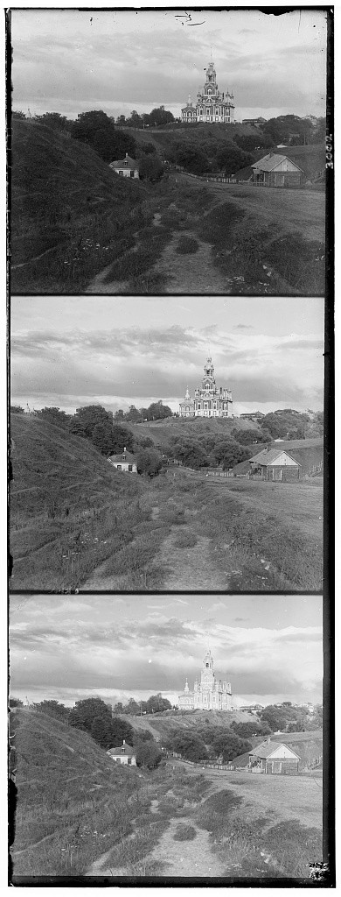
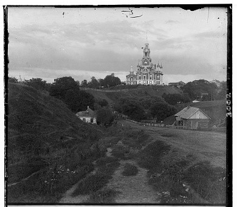
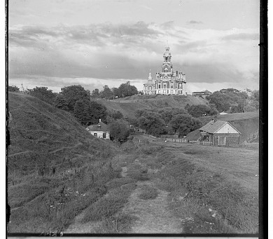
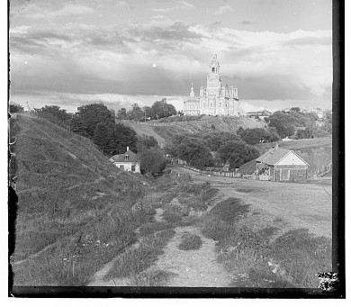
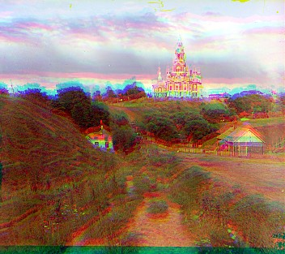
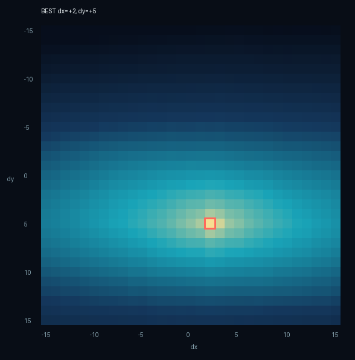
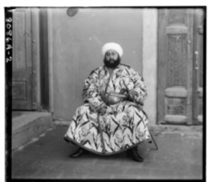
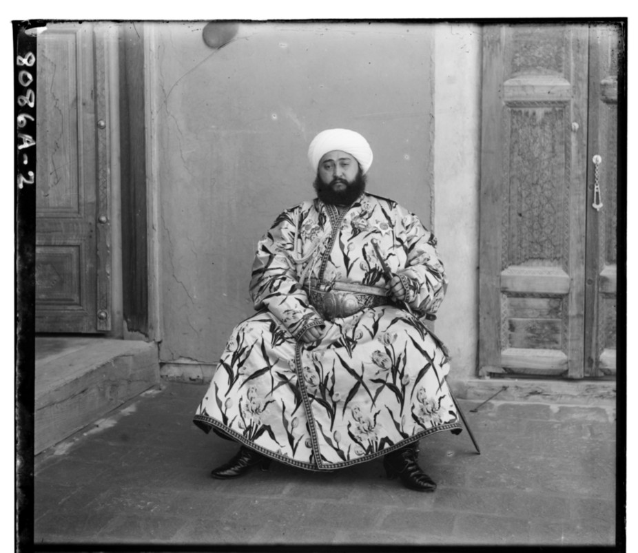
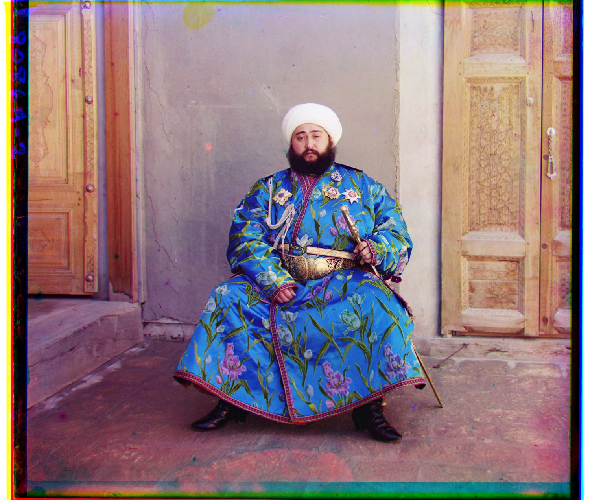
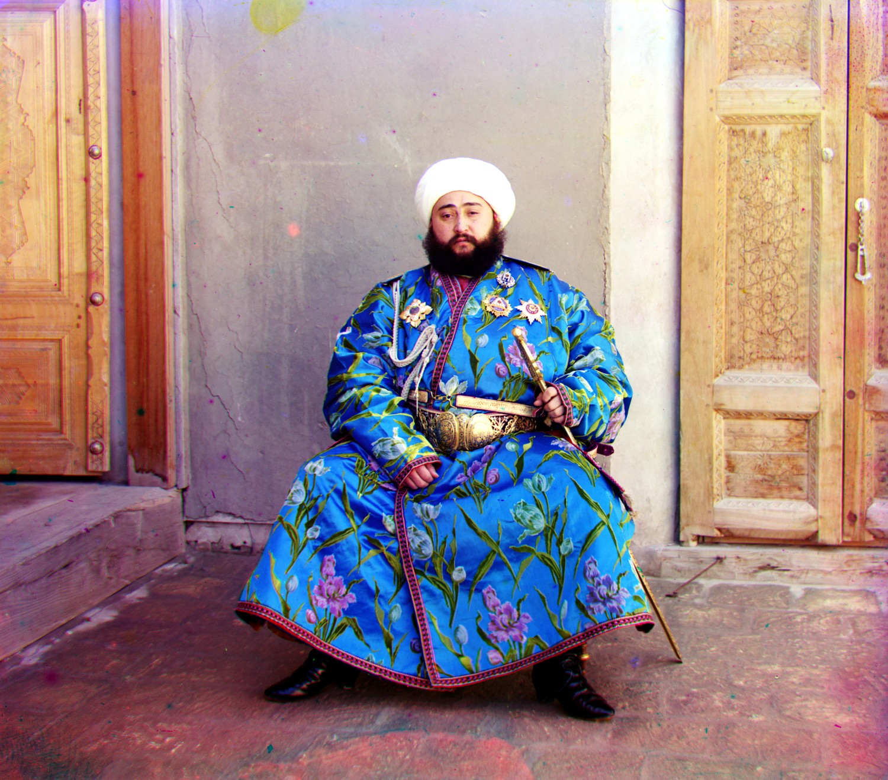

00 / OVERVIEW
Three exposures,
one color photograph.
Sergei Prokudin-Gorskii recorded the same scene three times through blue, green, and red filters. The scans preserve those exposures as a single tall grayscale plate. The goal is to recover a color photograph by finding the translation that makes the three records coincide.
(x, y) is applied to a moving channel. Positive x moves right; positive y moves down. Blue remains fixed throughout.
01 / THE GLASS PLATE
Splitting the scan.
The input is a two-dimensional grayscale array of shape (3H, W), not an ordinary (H, W, 3) color image. The filter order is blue, green, red. Any remainder below three equal sections is discarded.




Algorithm
# Split the stacked grayscale plate in BGR order
height = plate.shape[0] // 3
blue = plate[:height]
green = plate[height : 2 * height]
red = plate[2 * height : 3 * height]02 / SINGLE-SCALE ALIGNMENT
Try every shift.
For a small JPEG, exhaustive search is both transparent and effective. Therefore only a user-selected window (default to 15) is tested, compare only valid overlapping pixels, and retain the shift with the best score.
Overlap, rather than wrap
For candidate (dx, dy), the comparison pairs reference[y, x] with moving[y − dy, x − dx]. The common valid region is sliced instead of using a circular roll, so pixels leaving one side never reappear on the other. 10% of each overlap edge is then ignored while scoring to prevent the physical plate border from dominating the match.
SCORE_CROP = 0.10
Score only the center.
After finding the valid overlap, 10% is trimmed from its top, bottom, left, and right. NCC or L2 therefore sees the central 80% in each dimension—about 64% of the overlap pixels—and ignores the unstable glass-plate frame.
Algorithm
for dy in range(center_y - radius, center_y + radius + 1):
for dx in range(center_x - radius, center_x + radius + 1):
ref_patch, mov_patch = overlap(reference, moving, (dx, dy))
score = metric(ref_patch, mov_patch)
if score < best_score:
best_score = score
best_shift = (dx, dy)Comparison

Aligned UnalignedDrag to inspect the roof, tower, and horizon. Colored fringes collapse when the three channel edges occupy the same coordinates.
03 / MATCHING METRICS
L2 measures values &
NCC measures pattern.
L2 / Mean Squared Error
mean((A − B)²)
L2 directly penalizes pixel differences. It is simple and fast, but a global brightness or contrast change creates a large error even when structures line up.
Normalized Cross-Correlation
(A−μA)·(B−μB) / ‖A−μA‖‖B−μB‖
NCC removes each patch mean and normalizes its magnitude. It compares the direction of variation, making it much less sensitive to exposure differences.
A = [1, 2, 3]
B = [11, 12, 13]
L2 is large
NCC = 1
Comparison

SCORE LANDSCAPE · GREEN TO BLUE
NCC
Brighter cells have greater normalized correlation. The red outline marks the maximum at (+2, +5).
- dx
- +2 px
- dy
- +5 px
- Window
- 31 × 31
√(dx² + dy²) is condidered as an invariant feature, with NCC applied to those structural edges. Raw NCC and L2 remain available from the command line.
04 / MULTI-SCALE PYRAMID
Pyramid Alignment.
A full-resolution TIFF may require a displacement greater than one hundred pixels. Expanding exhaustive search over the original image would multiply both the number of candidates and the cost of every comparison. The pyramid moves the broad search to a tiny image.
Building each level
Before taking every second row and column, the separable binomial kernel [1, 4, 6, 4, 1] / 16 is applied horizontally and vertically. This approximates Gaussian blur and suppresses high frequencies that would otherwise alias during decimation.


Coarse-to-fine search
At the coarsest 1/16 level, the original red displacement (40,107) becomes about (2,7), safely inside a ±15(search_radius) window. At every finer level, the previous estimate is doubled and refined ±3(refine_radius) around that prediction.
| Level | Search center | Radius | Best R → B |
|---|---|---|---|
| 1/16 | (0, 0) | ±15 | (2, 7) |
| 1/8 | (4, 14) | ±3 | (5, 13) |
| 1/4 | (10, 26) | ±3 | (10, 27) |
| 1/2 | (20, 54) | ±3 | (20, 53) |
| Full | (40, 106) | ±3 | (40, 107) |
Algorithm
estimate = (0, 0)
for level in coarse_to_fine(pyramid):
if level is not coarsest:
estimate = 2 * estimate
estimate = search(
center=estimate,
radius=15 if coarsest else 3,
)05 / AUTOMATIC CROPPING
Detect the frame.
The three translated channels first intersect at their common valid region. I then measure color discontinuities between adjacent rows and columns, reduce each boundary to a robust 90th-percentile strength, and search only the outer 12% of the image. A candidate must be unusual relative to ordinary interior edges and connected to the dominant border neighborhood. Finally, the innermost qualifying edge is selected, followed by a small inward buffer.
This removes black, white, and multi-color plate bands without blindly discarding the same percentage from every photograph.
Comparison

